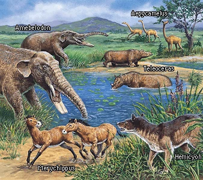
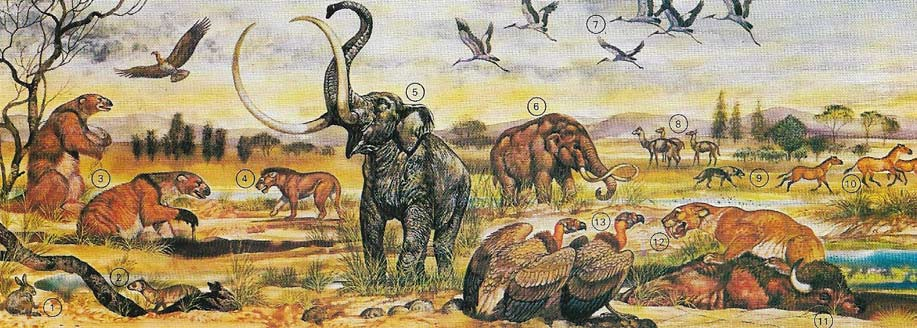

The Cenozoic Era (66 million years ago–present) is the most recent era in Earth’s history, often called the "Age of Mammals." After the mass extinction that wiped out the non-avian dinosaurs, mammals rapidly evolved to fill the ecological gaps left behind. This era saw the rise of modern ecosystems, the evolution of primates—including humans—and the shifting of continents into their current positions.
The Paleogene Period began immediately after the Cretaceous-Paleogene (K-Pg) extinction event, which wiped out approximately 75% of species on Earth. With the dinosaurs gone, mammals, birds, and reptiles adapted to new environments and diversified rapidly.
The Neogene Period marked the transition to a cooler and drier climate, which led to the expansion of grasslands and savannas. This change influenced the evolution of grazing animals and the predators that hunted them.
The Quaternary is the most recent period of the Cenozoic and is defined by repeated ice ages, the rise of modern humans, and the shaping of Earth's ecosystems into their present form.
